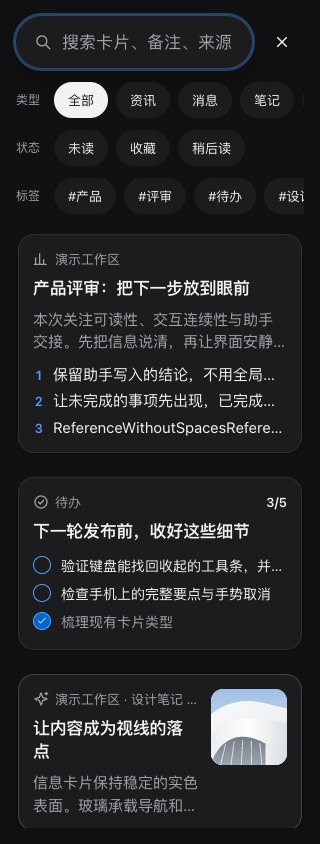
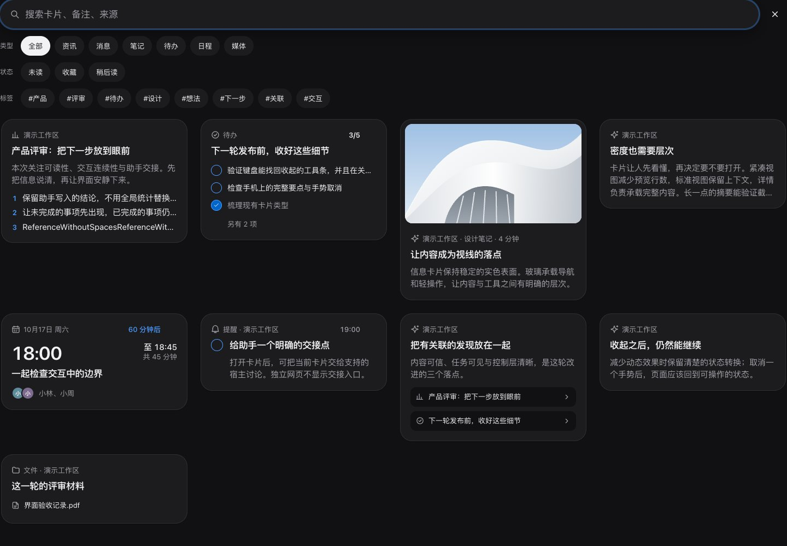

搜索 · 类型、状态、标签分三行
2026-10-19 用户选择 B，见 ADR 0044。A 单行横滑不采用。每行左侧 28px 宽、12px muted 名称，右侧原文字胶囊独立横滑，行间与条件间各 8px、内边 2px。标签为空不显示空行。
本地 43 号画板，线上未同步。六图来自真实实现与合成卡片，无临时样式。读屏可区分三个具名组；重绘保留各行横滑和键盘焦点。搜索保持独立，详情返回原查询，来源卡片不变；不新增搜索能力。
手机 320 / 390 · 浅色与深色

桌面 1440 · 同样按条件分行

专项覆盖七组宽度、主题与窄键盘空间。Mac 未改，真机、Safari 与 Mac 原生视觉未检查。未访问线上设计或 Mobbin，线上资产记录不变。